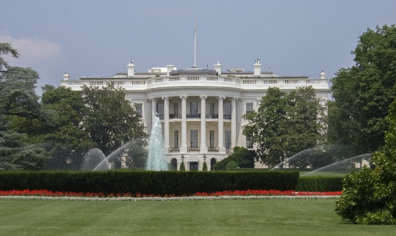

![NTK]()

Judge Timothy Kelly, whom Trump himself appointed in 2017, took the White House's national security argument apart line by line. The administration told the court it revoked hard passes from CNN, MS NOW and Politico because their reporting endangered national security. Kelly wrote he was "skeptical" that was the real motivation, noting that Trump never mentioned security when he announced the ban Sept. 19: he talked about "false or negative coverage," full stop (ABC News). The stories the White House flagged as threats were, in Kelly's word, "routine" (ABC News). One of them undercut the government's own case worse than that. Politico's story on the Iran peace talks, cited as a security breach, came from a background press call the White House itself organized, and the anonymous "senior administration official" doing the talking was Vice President JD Vance (The New Republic). Vance had defended the ban as "totally appropriate" days earlier without mentioning he was the leak (The New Republic).
That ruling landed just after midnight Thursday. What happened next is why the story didn't end there.
The White House said it restored access at 9:55 a.m. Reporters were still standing outside the gates at noon. CNN's Betsy Klein, whose hard pass a Secret Service agent had confiscated the previous Saturday, had it returned only to be told the pass wouldn't get her back onto the grounds (LAist/NPR). MS NOW's Laura Barrón-López and a Politico reporter were also turned away that morning (ABC News). Lawyer Ted Boutrous went back to Kelly by midmorning, writing that "Defendants have already repeatedly violated the Court's Order," and asked for an emergency hearing before lunch (ABC News). Kelly gave the administration until 12:30 p.m. to explain itself. Access came back in pieces after that: Klein walked through a gate shortly after noon, Barrón-López got back on campus that afternoon (ABC News).
The timing cost the president the split screen he wanted. ABC, CBS, CNN, Fox News and NBC, the five networks that run the White House pool, had already suspended joint coverage in solidarity Monday (Daily Beast). That meant no major network camera was rolling Wednesday when Trump greeted Chinese President Xi Jinping on a 100-foot red carpet with a B-1 bomber flyover overhead (Daily Beast). CNN's Kaitlan Collins, sparring with Trump for the fourth documented time since December after he told her at the U.N. "you shouldn't be here covering me," summed up the gap between the spectacle and its audience on air Wednesday.
It was a landmark scene made for television that had trouble finding a screen.
Kaitlan Collins, CNN anchorThe next fourteen days run on a clock the White House does not control.
Kelly's temporary restraining order expires in 14 days, and the administration will almost certainly ask him to make it permanent, or fight it at the D.C. Circuit instead. A TRO is not a final ruling. It buys CNN, MS NOW and Politico two weeks of access while the underlying lawsuit, Cable News Networks, Inc. v. Trump, proceeds. Kelly already tipped his hand on the merits, calling the national security rationale unconvincing and the process nonexistent (Fox 5 DC). That kind of preview rarely reverses itself by the next hearing. The administration's most survivable move is to appeal past Kelly rather than argue the same facts back to him, and watch for that filing at the circuit court within the next week.
That legal maneuvering will matter less than what happened Thursday morning, when guards held the gate shut for three hours after the order took effect. That gap is the real story going forward, because it tells the plaintiffs' lawyers, Ted Boutrous chief among them, that a favorable ruling doesn't enforce itself. The most likely next step is Boutrous asking Kelly for a contempt finding or a more specific compliance order, something with named officials and a deadline attached, rather than trusting "immediately return, reinstate, and restore" to hold on its own. Micah Stopperich, the press operations director who told the court access was restored at 9:55 a.m. while reporters stood outside past noon, is the person whose sworn declarations will get more scrutiny in the next filing.
The Vance revelation will not stay contained to one New Republic story. The White House built its national security case on a set of flagged articles, and one of them traces straight back to the vice president speaking on background at an event his own staff organized. That is not the kind of detail that stays buried once a plaintiff's legal team has it in hand. Expect Boutrous and his co-counsel to use it in the next round of briefing to argue the entire justification was invented after the fact, since Kelly already flagged the same gap without knowing about Vance. If the pattern holds, at least one more of the administration's cited "security threats" will turn out to have originated inside the building that claims it was breached, and the person most exposed by that discovery is not a reporter. It's Vance, who told the press the ban was "totally appropriate" without disclosing he was the source of the story that helped trigger it.
Watch also for the five pool networks. ABC, CBS, CNN, Fox News and NBC suspended joint coverage in solidarity this week, and that arrangement holds only as long as access stays contested. The moment the TRO looks durable, the pressure to resume normal coverage will build fast, especially from networks with no lawsuit of their own and no appetite to keep sacrificing coverage of a sitting president over a fight that belongs to three of their competitors.
The Vance leak is sitting in Boutrous's file now, and the next room only opens once he decides what to do with it.
Boutrous could file for sanctions against the DOJ lawyers directly, not just a contempt motion against the agency. The nine-hour gap between Kelly's order and the White House's compliance is the kind of thing judges usually handle by scolding a client. But Stopperich's sworn declaration claiming access was restored at 9:55 a.m., when reporters were still standing outside past noon, puts government attorneys in the position of having submitted a filing that doesn't match what happened on the ground. That combination, a specific sworn timestamp and a documented contradiction, is what turns a compliance dispute into a credibility problem for the DOJ lawyers who vouched for it. Judges rarely sanction agencies. They sanction the lawyers who signed the paperwork. If Boutrous goes that route instead of a straightforward contempt motion, the fight stops being about press access and starts being about whether the Justice Department can be trusted to represent facts to a federal court, a much harder story for the administration to spin as a media grievance.
That reframing is only reachable because Kelly already primed it. His ruling called the national security rationale unconvincing before anyone told him about Vance. Once Boutrous adds the Vance detail to a sanctions filing rather than a routine compliance motion, he's asking Kelly to conclude not just that the ban was pretextual, but that the government's lawyers knew it and argued the case anyway. That's a door that didn't exist Wednesday night. It exists now because the New Republic's reporting and the Thursday morning gate standoff landed in the same 48 hours.
A second, quieter door sits behind the first one, and it belongs to the five pool networks who stayed out of the lawsuit entirely.
ABC, CBS, Fox News and NBC could use a sanctions fight, if it happens, as the exit ramp back to normal coverage that solidarity alone hasn't provided. Their joint suspension was a gesture, not a legal position, and gestures erode faster than lawsuits. If Kelly issues a sharper order against DOJ conduct rather than just extending the TRO, that gives the four networks a clean, external justification to resume the pool: the court settled it, so covering the president again isn't crossing a picket line, it's just following a judge. That's a face-saving door that only opens once Kelly rules on more than access, because a plain TRO renewal gives them no new reason to move that a lawyer for CNN, MS NOW or Politico didn't already argue for.
The generative version of this same week runs through Judge Kelly, not around him.
A hard finding on DOJ conduct, even short of sanctions, could become the citable precedent that outlasts this particular ban. Kelly is a Trump appointee whose written skepticism already carries more weight with future courts than a Democratic appointee's would. If he memorializes not just that the ban was pretextual but that officials misrepresented compliance to his court, that ruling becomes the thing the next administration's press office has to read before trying this again, regardless of party. That's the door Thursday morning actually opened: not just three newsrooms back on the lawn, but a judge with the credibility to make the next White House think twice.
The White House's own words about why the ban happened keep changing, which is usually a sign the first answer wasn't the real one.
Trump claims CNN, MS NOW and Politico were banned to protect national security. He announced it that way to the courts. He didn't announce it that way to the public. When Trump posted the ban Sept. 19, he told the country the outlets "shouldn't be able to constantly write or report FICTION and LIES" (ABC Australia). No national security language, no classified information, no operational risk. That framing showed up later, once lawyers needed something a judge could weigh against the First Amendment. Judge Kelly, the same judge Trump appointed, noticed the swap and said so from the bench: the record showed no security concern predating the lawsuit, only Trump's stated objection to coverage he considered false and negative. The distinction matters because one justification is legal and the other isn't. Banning a newsroom for national security risk is a power the executive branch can at least argue for in court. Banning a newsroom because the president dislikes its tone is viewpoint discrimination, and the Constitution has a word for that: illegal.
The people who benefit from the security framing are easy to name. Trump gets to look like a president managing threats rather than a president punishing critics, a distinction that plays differently with the voters who still trust the office more than they trust any particular outlet covering it. JD Vance gets something more specific: cover. Vance told reporters Monday the ban was "totally appropriate," a defense he delivered without mentioning that one of the flagged stories, the Iran peace-talks piece Politico ran, came from his own mouth on a background call his own staff organized. If the ban is about security, Vance is a bystander defending a policy. If the ban is about punishing coverage, Vance is a man who leaked something himself and then helped punish three newsrooms for printing it.
The believable part of the lie is that "national security" sounds like the kind of thing reasonable people don't get to see the evidence for, which is exactly why it's been the preferred cover story for press restrictions in Washington for decades. Nixon used it. So did the Pentagon during Vietnam, when reporters were told access depended on operational security and got pulled the moment coverage turned unflattering. Kelly's ruling didn't need to reach back that far. He only needed the record in front of him, which showed a president who explained himself plainly the day he acted, then hired lawyers to explain him differently once a courtroom was involved.
If you actually look at the objective analysis, Politico is as anti-Trump as Breitbart was anti-Obama or anti-Biden.
JD Vance, vice president, defending the ban Monday